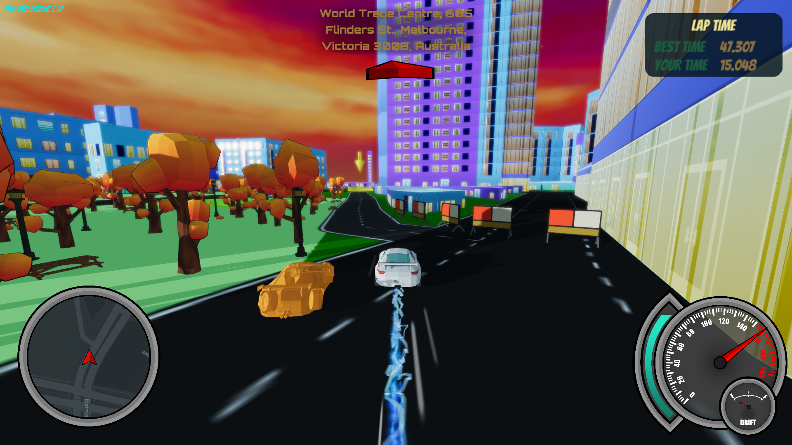
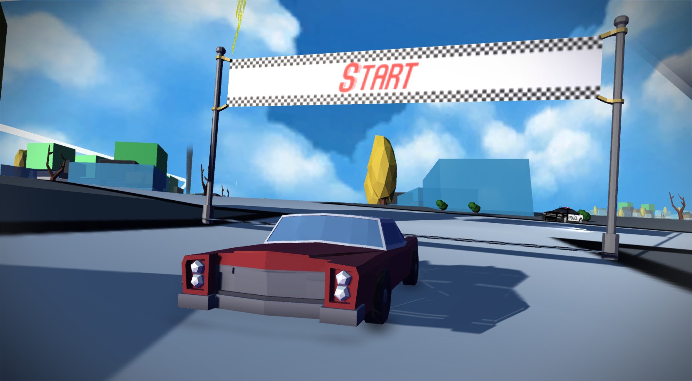

Unity - C#
About
Real World Racer is a racing game where you can race anywhere in the world. The environment is created through real world map data using the
Mapbox Unity SDK. The player can choose anywhere in the world they want to race, type in the place or lat/long and the world is created around
them. Using Photon Unity Networking, I set up multiplayer so that players can race each other in their own streets.
It is still in early stages, just finishing our pre-production and beginning Alpha. I'm Lead Programmer in a team of 1 Designer/Producer,
2 Artists and 3 Programmers. For more information, feel free to contact me on any media at the bottom of the page.
Feel free to poke around the repo here.

